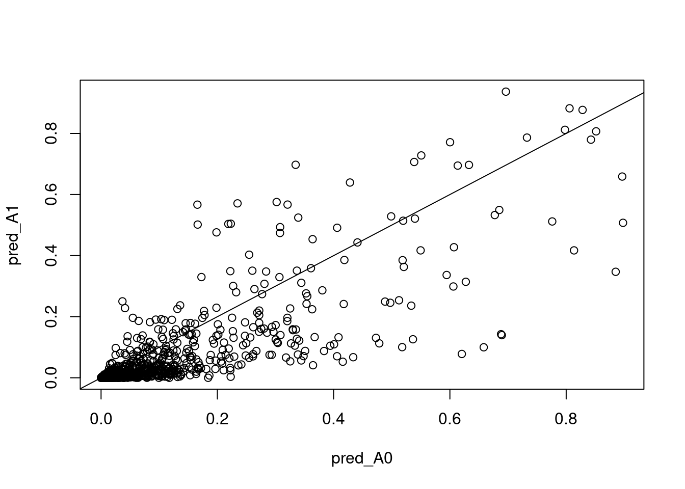
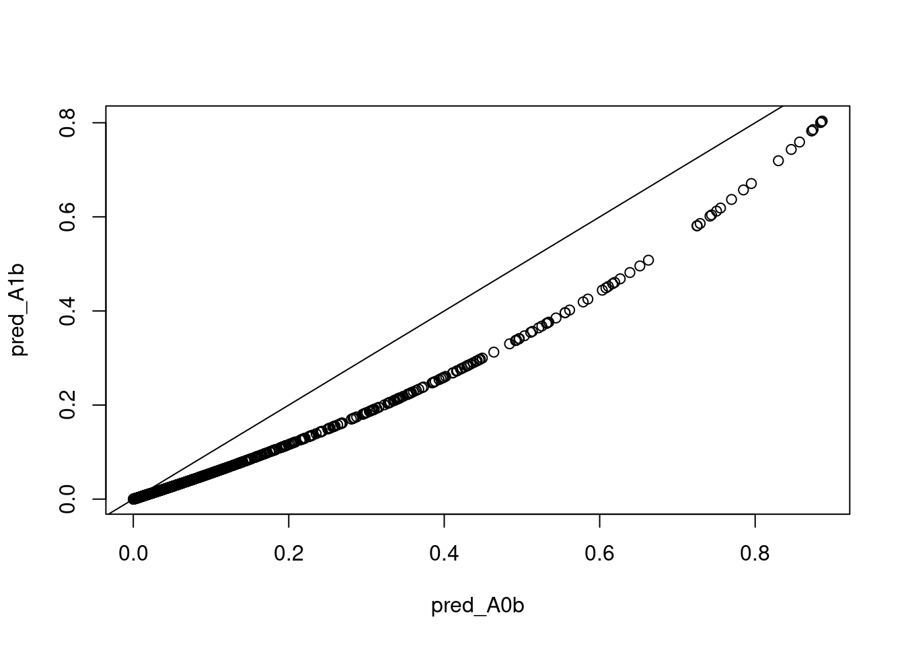
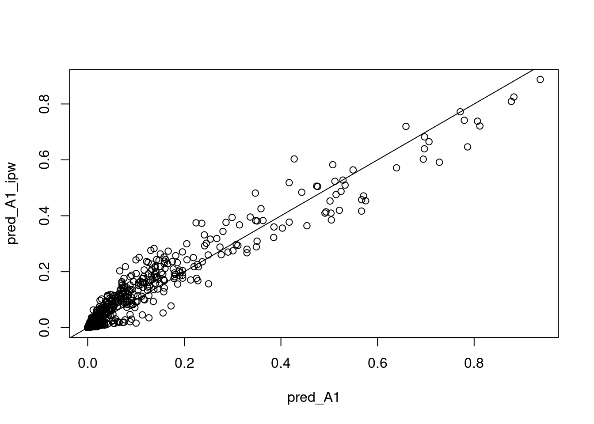
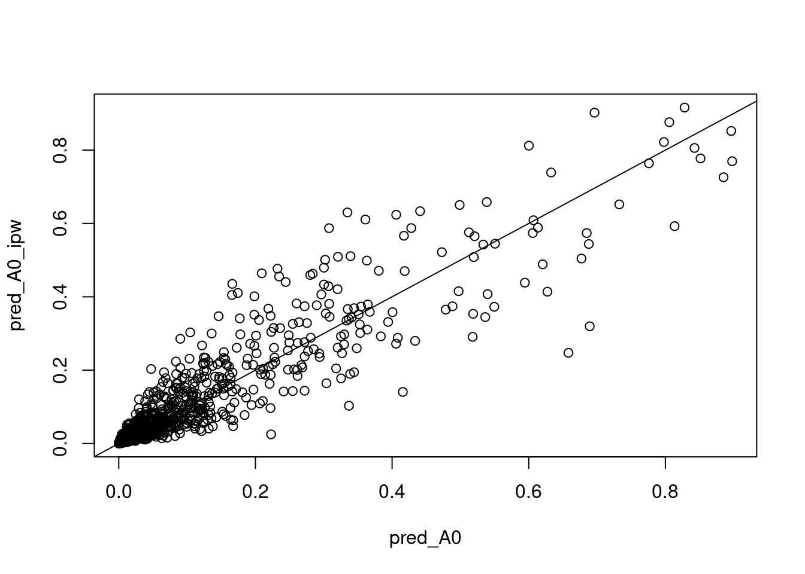

train <- readRDS(url("https://smartbiomed.github.io/causal-prediction-course/data/exercises/data/type1-diabetes-train.rds"))
test <- readRDS(url("https://smartbiomed.github.io/causal-prediction-course/data/exercises/data/type1-diabetes-test.rds"))Causal prediction for medical decision making. Practicals, day 3, morning.
Learning outcomes
To use a DAG to decide which variables should be included in an analysis in order to develop a causal prediction model for predicting the risk of CVD death if a person starts statins and if they do not start statins
To develop a causal prediction model using g-formula and inverse probability weighting (IPW) approaches for implementation in a test data set in which the same variables are observed as in the training data set
To develop a causal prediction model for a situation in which not all variables available in the training data set are available in the deployment data
Data
In this practical we will continue to use the simulated data on people with type 1 diabetes. Interest lies in obtaining predictions of the 5-year risk of CVD death if a person were to start using statins and if they were not to start using statins. A more detailed specification for the causal prediction model is given in the table below.
| Estimand element | Specification |
| Target population | Adults with type 1 diabetes who have not yet started using statins. |
| Time point of intended use | Attendance at a screening visit at the diabetes center |
| Outcome and prediction horizon | CVD death up to 5 years |
| Predictors | LDL, SBP, motion, polygenic risk score, sex, age, diabetes duration, smoking. |
| Treatment options | (i) Start using statins (ii) Do not start using statins |
Exercises
- Using the information provided in the table above write down the causal estimands of interest, following the notation used in the lecture slides.
Solution: The estimands of interest are \(\Pr(Y^{1}=1| X^*)\) and \(\Pr(Y^{0}=1|X^*)\) where \(Y^{1}\) denotes the counterfactual outcome \(Y\) (CVD death within 5 years) under statin treatment, \(Y^{0}\) denotes the counterfactual outcome \(Y\) under no statin treatment. The predictors \(X^*\) are LDL, motion, polygenic risk score, sex, age, diabetes duration, smoking. The estimands could also be written in terms of expectations as \(E(Y^{1}| X^*)\) and \(E(Y^{0}| X^*)\).
Based on the DAG you used in yesterday’s practical, we now consider which variables would need to to be included in an analysis in order to develop the causal prediction model, or in other words to enable estimation of \(\Pr(Y^{a}=1| X^*)\) (\(a=0,1\)) from the data.
What are the \(L\) variables and what are the \(P\) variables?
Write your causal estimand from question 1 in terms of the observed variables, and state your assumptions.
Solution: The \(L\) variables (confounders of statin use and the outcome) are LDL_0, motion, steno_prs. The \(P\) variables (predictors of the outcome but not of statin use) are sex_male, age, diabetes_duration, smoking, SBP_0.
The causal estimands can be written as: \(\Pr(Y^{1}=1| X^*)=\Pr(Y^{1}=1|L,P)=\Pr(Y=1|A=1, L,P)\) and \(\Pr(Y^{0}=1| X^*)=\Pr(Y^{0}=1|L,P)=\Pr(Y=1|A=0, L,P)\). Writing the estimands in terms of the observed data relies on the assumption that \(X^*=(L,P)\) are sufficient to control for confounding of the association between statin use and the outcomes, and the consistency assumption.
- Consider the prediction model that you developed in the practical on Day 1 (afternoon). Is it suitable for making causal predictions, i.e. for estimating your estimand specified in question 1 above? Discuss why or why not.
Solution: Points to consider are:
What was the ‘time zero’ for your model, and does this align with the time at which you would wish to make the decision about statin use?
Did your model include all the necessary \(L\) variables?
Did your model include any variables on the causal pathway between statin use and the outcome?
- Read the training data and the test data into R.
Solution:
Causal prediction modelling using the g-formula:
Using the g-formula approach develop a causal-prediction model using the training data that will enable you to estimate the estimand in 1.
What assumptions are you making?
Based on your model from (b), obtain an estimate of the 5-year risk of CVD death (i) under statin use and (ii) under non-statin use for each individual in the test data. Compare the estimates of risk under the two treatment options.
Solution:
We fit a logistic regression model including cvd_5year as the outcome \(Y\), separately for people with \(A=1\) (statin=1)and people with \(A=0\) (statin=0). The \(L\) variables and \(P\) variables (and hence \(X^*=\{L,P\}\) are as given in Question 2. A different model is discussed below.
mod_A1<-glm(cvd_5year~LDL_0+motion+steno_prs+sex_male+age+diabetes_duration+smoking+SBP_0,data=train[train$statin==1,],family="binomial")
summary(mod_A1)
Call:
glm(formula = cvd_5year ~ LDL_0 + motion + steno_prs + sex_male +
age + diabetes_duration + smoking + SBP_0, family = "binomial",
data = train[train$statin == 1, ])
Coefficients:
Estimate Std. Error z value Pr(>|z|)
(Intercept) -24.16044 5.46877 -4.418 9.97e-06 ***
LDL_0 0.48054 0.21240 2.262 0.0237 *
motion -0.30681 0.86969 -0.353 0.7243
steno_prs -0.03221 0.24797 -0.130 0.8966
sex_male 0.51395 0.52020 0.988 0.3232
age 0.03022 0.06710 0.450 0.6524
diabetes_duration 0.19151 0.07798 2.456 0.0141 *
smoking -10.81774 1463.09240 -0.007 0.9941
SBP_0 0.09547 0.03852 2.478 0.0132 *
---
Signif. codes: 0 '***' 0.001 '**' 0.01 '*' 0.05 '.' 0.1 ' ' 1
(Dispersion parameter for binomial family taken to be 1)
Null deviance: 199.98 on 253 degrees of freedom
Residual deviance: 134.47 on 245 degrees of freedom
AIC: 152.47
Number of Fisher Scoring iterations: 16mod_A0<-glm(cvd_5year~LDL_0+motion+steno_prs+sex_male+age+diabetes_duration+smoking+SBP_0,data=train[train$statin==0,],family="binomial")
summary(mod_A0)
Call:
glm(formula = cvd_5year ~ LDL_0 + motion + steno_prs + sex_male +
age + diabetes_duration + smoking + SBP_0, family = "binomial",
data = train[train$statin == 0, ])
Coefficients:
Estimate Std. Error z value Pr(>|z|)
(Intercept) -25.18343 4.72147 -5.334 9.62e-08 ***
LDL_0 -0.04390 0.18213 -0.241 0.809527
motion -0.32112 0.55119 -0.583 0.560169
steno_prs 0.61979 0.21119 2.935 0.003338 **
sex_male 0.59437 0.41106 1.446 0.148191
age 0.03546 0.05593 0.634 0.526079
diabetes_duration 0.18992 0.07170 2.649 0.008078 **
smoking 0.54284 1.15971 0.468 0.639724
SBP_0 0.12666 0.03315 3.821 0.000133 ***
---
Signif. codes: 0 '***' 0.001 '**' 0.01 '*' 0.05 '.' 0.1 ' ' 1
(Dispersion parameter for binomial family taken to be 1)
Null deviance: 300.29 on 745 degrees of freedom
Residual deviance: 219.42 on 737 degrees of freedom
AIC: 237.42
Number of Fisher Scoring iterations: 7We are assuming that the \(L\) variables are sufficient to control for confounding of the association between statins and CVD, i.e. that there are no confounders that are unaccounted for in the model.
We are also making modelling assumptions, which include that the continuous \(L\) variable (
LDL_0) has been entered into the model with the correct functional form. Adding a spline term could be a good idea, for example, though we do not use any splines for the continuous variables here due to the limited sample size.It does not matter whether the \(P\) variables are entered in the correct form into the model - using an incorrect form will impact of predictive performance but will not invalidate the models as estimators for the estimand of interest.
An alternative would be to fit a combined model in the whole training data including \(A\) as a predictor, rather than fitting separate models for \(A=0,1\). The alternative model is fitted below. Compared with the separate models, this makes the additional assumption that there are no interactions between treatment use (
statin) and any of the \(X^*\) variables included in the model.
mod<-glm(cvd_5year~statin+LDL_0+motion+steno_prs+sex_male+age+diabetes_duration+smoking+SBP_0,data=train,family="binomial")
summary(mod)
Call:
glm(formula = cvd_5year ~ statin + LDL_0 + motion + steno_prs +
sex_male + age + diabetes_duration + smoking + SBP_0, family = "binomial",
data = train)
Coefficients:
Estimate Std. Error z value Pr(>|z|)
(Intercept) -23.50461 3.45946 -6.794 1.09e-11 ***
statin -0.64374 0.38572 -1.669 0.09514 .
LDL_0 0.18286 0.13316 1.373 0.16966
motion -0.21568 0.43878 -0.492 0.62304
steno_prs 0.37423 0.15519 2.412 0.01589 *
sex_male 0.45402 0.31421 1.445 0.14847
age 0.03570 0.04255 0.839 0.40148
diabetes_duration 0.18038 0.05132 3.515 0.00044 ***
smoking 0.74341 1.10874 0.670 0.50254
SBP_0 0.10969 0.02459 4.461 8.15e-06 ***
---
Signif. codes: 0 '***' 0.001 '**' 0.01 '*' 0.05 '.' 0.1 ' ' 1
(Dispersion parameter for binomial family taken to be 1)
Null deviance: 517.56 on 999 degrees of freedom
Residual deviance: 364.45 on 990 degrees of freedom
AIC: 384.45
Number of Fisher Scoring iterations: 7Here we illustrate obtaining predictions first based on mod_A1 and mod_A0 (i.e. the models fitted separately in the two statin treatment groups) and second using model mod (which included statin as a covariate).
Based on the model mod, which included statin as a covariate, the estimates of risk under statin use are all lower than the estimates of risk under no statin use. Based on the models mod_A1 and mod_A0, in which the models were fitted separately in the two statin treatment groups, the estimates of risk under statin use tend to be lower than the estimates of risk under no statin use, but there are a few individuals with a higher estimated risk under statin use compared to non-use.
#Obtaining predictions using mod_A1 and mod_A0
pred_A1<-predict(mod_A1,newdata=test,type="response")
pred_A0<-predict(mod_A0,newdata=test,type="response")
#Obtaining predictions using mod
#First create versions of the test data in which statin is set to 1 for everyone and in which statin is set to 0 for everyone
test_A1<-test
test_A1$statin<-1
test_A0<-test
test_A0$statin<-0
pred_A1b<-predict(mod,newdata=test_A1,type="response")
pred_A0b<-predict(mod,newdata=test_A0,type="response")
#summarise predictions and compare using plots
summary(pred_A1) Min. 1st Qu. Median Mean 3rd Qu. Max.
0.000000 0.001036 0.004808 0.051115 0.034941 0.936842 summary(pred_A0) Min. 1st Qu. Median Mean 3rd Qu. Max.
9.026e-05 6.699e-03 2.449e-02 8.201e-02 9.011e-02 8.978e-01 summary(pred_A1b) Min. 1st Qu. Median Mean 3rd Qu. Max.
0.0001093 0.0037657 0.0134764 0.0587982 0.0548395 0.8036555 summary(pred_A0b) Min. 1st Qu. Median Mean 3rd Qu. Max.
0.0002081 0.0071440 0.0253447 0.0913213 0.0994628 0.8862540 plot(pred_A0,pred_A1)
abline(0,1)
plot(pred_A0b,pred_A1b)
abline(0,1)
In this question we will suppose the risk score variable
steno_prsis not going to be available for individuals in the future for whom you will want to obtain predictions under the interventions of statin use or no statin use.Write down a new version of the estimand in Q1 to accommodate this information.
Write out the steps for using the IPW approach to estimate your new estimand.
Using the steps set out in (b) use the training data to develop a causal prediction model targeting your estimand from 6(a).
Obtain estimates of the 5-year risk of CVD death (i) under statin use and (ii) under non-statin use for each individual in the test data. Compare your predictions with those from question 5.
Solution:
The estimands of interest are as before, i.e. \(\Pr(Y^{1}=1| X^*)\) and \(\Pr(Y^{0}=1|X^*)\), except that the predictors \(X^*\) are
LDL_0,SBP_0,motion,sex_male,age,diabetes duration,smoking. We are now in a situation where one of the \(L\) variables (steno_prs) is not in the set of predictors for the causal prediction model, \(X^*\). This means that, unlike in question 2, we cannot write \(\Pr(Y^{1}=1| X^*)=\Pr(Y=1|A=1, X^*)\).First note that the estimands can be written as \(\Pr(Y^{1}=1| X^*)=E\left\{\frac{A}{\Pr(A=1|L)}Y|X^*\right\}\) and \(\Pr(Y^{0}=1| X^*)=E\left\{\frac{(1-A)}{\Pr(A=0|L)}Y|X^*\right\}\), under assumptions that \(L\) is sufficient to control for confounding of the association between \(A\) and \(Y\), and that we have positivity. The steps for estimating \(\Pr(Y^{1}=1| X^*)=E\left\{\frac{A}{\Pr(A=1|L)}Y|X^*\right\}\) are: (i) Fit a model for \(\pi(L)=\Pr(𝐴 = 1|𝐿)\); (ii) Obtain the weights \(1/\pi(L)\); (iii) Fit a weighted logistic regression of \(Y\) on \(X^*\) in people with \(A=1\), where the weights are \(1/\pi(L)\).
The estimand \(\Pr(Y^{0}=1| X^*)=E\left\{\frac{(1-A)}{\Pr(A=0|L)}Y|X^*\right\}\) can similarly be estimated by obtaining the weights \(1/(1-\pi(L))\), and then fitting a weighted logistic regression of \(Y\) on \(X^*\) in people with \(A=0\), where the weights are \(1/(1-\pi(L))\).
#fit the propensity score model
mod_ps<-glm(statin~LDL_0+motion+steno_prs,data=train,family="binomial")
#obtain weights
pi_L<-predict(mod_ps,newdata=train,type="response")
train$ipw<-ifelse(train$statin==1,1/pi_L,1/(1-pi_L))
#Fit weighted outcome model in those with A=1
mod_ipw_A1<-glm(cvd_5year~LDL_0+motion+sex_male+age+diabetes_duration+smoking+SBP_0,data=train[train$statin==1,],family="binomial",weights=ipw)Warning in eval(family$initialize): non-integer #successes in a binomial glm!#Fit weighted outcome model in those with A=0
mod_ipw_A0<-glm(cvd_5year~LDL_0+motion+sex_male+age+diabetes_duration+smoking+SBP_0,data=train[train$statin==0,],family="binomial",weights=ipw)Warning in eval(family$initialize): non-integer #successes in a binomial glm!#Obtain predictions
pred_A1_ipw<-predict(mod_ipw_A1,newdata=test,type="response")
pred_A0_ipw<-predict(mod_ipw_A0,newdata=test,type="response")The plots below compare the predictions obtained using the IPW analysis, which excludes steno_prs from the set of predictors, and the g-formula analysis. There is a strong positive relationships between predictions under the two prediction models, under both treatment strategies.
#Plot IPW predictions (which exclude steno_prs as a predictor) against g-formula predictions: using g-formula predictions based on 'mod'
plot(pred_A1,pred_A1_ipw)
abline(0,1)
plot(pred_A0,pred_A0_ipw)
abline(0,1)
We will now obtain predictions for individuals in the deployment data.
Read in the deployment data.
Using your model from question 6, obtain predictions of the 5-year risk of CVD death (i) under statin use and (ii) under non-statin use for each individual.
Send your predictions from (b) to Mike.
Solution:
deploy <- readRDS(url("https://smartbiomed.github.io/causal-prediction-course/data/exercises/data/type1-diabetes-deployment.rds"))
#Obtain predictions
pred_A1_ipw_deploy<-predict(mod_ipw_A1,newdata=deploy,type="response")
pred_A0_ipw_deploy<-predict(mod_ipw_A0,newdata=deploy,type="response")